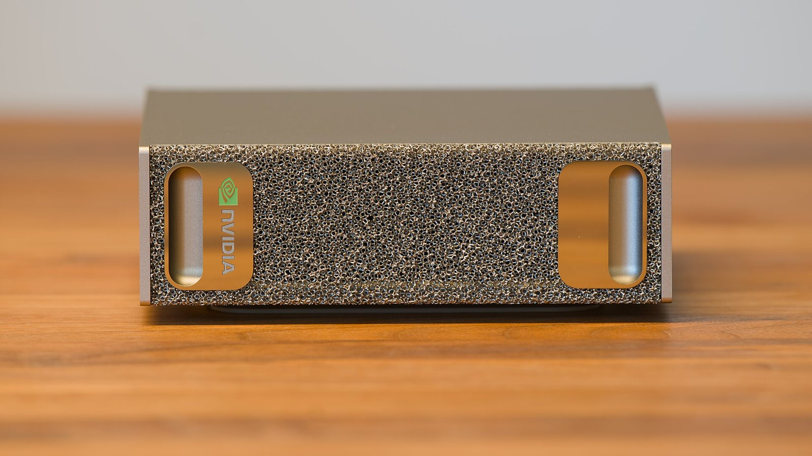

Nasdaq −5,28%, Nvidia −14%: la settimana peggiore dal 2020 cancella i guadagni dell'anno
Le vendite sui titoli dell'intelligenza artificiale sono diventate panico nel pomeriggio americano. Il Nasdaq ha perso più del 5% per la seconda volta in tre settimane, l'S&P 500 e il Dow Jones hanno chiuso in correzione e l'indice della paura ha toccato quota 40.

In sintesi
- Nasdaq −5,28% a 22.617,73, S&P 500 −3,70%, Dow Jones −1,93% (−950 punti).
- S&P 500 e Dow Jones in correzione; il Nasdaq 100 chiude 19,8% sotto il record, a un passo dal mercato ribassista.
- Chip a picco: indice di settore −10,73%, Nvidia −14,01%, Micron −13,89%, AMD −13,25%.
- Nella settimana: Nasdaq −10,0%, S&P 500 −8,6%, Dow Jones −8,0%.
- VIX a 35,89 (+26,20%), Treasury decennale al 4,91%, bitcoin sotto i 60.000 dollari.
Venerdì 20 novembre il Nasdaq Composite ha chiuso a 22.617,73 punti, −5,28% (−1.261,47 punti): ha cancellato tutto il guadagno del 2026 e ora è −2,7% da inizio anno. L'S&P 500 ha perso il 3,70% a 6.910,39 e il Dow Jones 949,73 punti (−1,93%) a 48.147,33: entrambi hanno chiuso oltre il 10% sotto il record, cioè in correzione. Nvidia è crollata del 14,01% a 125,53 dollari. In una settimana il Nasdaq ha perso il 10,0%: secondo CNBC è il calo settimanale più forte da oltre sei anni, cioè dal marzo 2020.
Le chiusure: un anno di guadagni cancellato in una settimana
| Indice | Chiusura | Oggi | Settimana | Da inizio anno |
|---|---|---|---|---|
| S&P 500 | 6.910,39 | −3,70% | −8,6% | +0,9% |
| Nasdaq Composite | 22.617,73 | −5,28% | −10,0% | −2,7% |
| Nasdaq 100 | 25.028,98 | −5,61% | −10,4% | −0,9% |
| Dow Jones | 48.147,33 | −1,93% | −8,0% | +0,2% |
| Russell 2000 | 2.581,79 | −2,76% | −7,5% | +4,0% |
Rispetto ai record di ottobre l'S&P 500 è sotto dell'11,6%, il Nasdaq Composite del 18,1% e il Nasdaq 100 del 19,8%: secondo CNBC quest'ultimo durante la seduta ha superato per qualche momento la soglia del 20%, quella del mercato ribassista. Il Dow Jones è sotto dell'11,4% rispetto al record di agosto. Per l'S&P 500 è la settima seduta di calo di fila. È la seconda volta in tre settimane che il Nasdaq perde più del 5% in un giorno, dopo il 5 novembre: nella nostra analisi storica abbiamo ripercorso tutte le sedute così dal 2011, con le cause e quello che è successo dopo.
Il pomeriggio del crollo
A metà giornata, come avevamo raccontato alle 18, il Nasdaq perdeva poco più del 3%. Il crollo è arrivato nel pomeriggio americano. Verso le 20:20 italiane la governatrice della Fed Lisa Cook, parlando in Cile, ha detto che l'inflazione è sopra l'obiettivo da più di cinque anni e mezzo e che, aspettando, la banca centrale rischierebbe di restare indietro e di dover poi alzare i tassi di più. Intanto su Nvidia si sono sommate nuove notizie: secondo un'indiscrezione di Reuters riportata da CNBC, la SEC, l'autorità americana della Borsa, starebbe esaminando questioni contabili della società; secondo Benzinga, il procuratore generale della California ha chiesto documenti per verificare se chip avanzati siano arrivati in Cina. Sono indiscrezioni: al momento non ci sono accuse formali. Alle 21:13 il Nasdaq perdeva il 4,75%; verso le 21:40 il VIX, l'indice della paura, ha toccato quota 40, per poi chiudere a 35,89.
💡 Impara: la media mobile a 200 giorni
La 200-day moving average (media mobile a 200 giorni) è la media dei prezzi di chiusura delle ultime 200 sedute, circa dieci mesi di Borsa. Molti investitori la usano per capire la tendenza di fondo: sopra la media il mercato è considerato in salita, sotto in discesa. Secondo l'analista Jonathan Krinsky di BTIG, citato da CNBC, oggi tutti e tre gli indici principali hanno chiuso sotto la propria media a 200 giorni, e quando succede il rischio, scrive, resta orientato al ribasso. È uno strumento statistico, non una previsione.
Chip e intelligenza artificiale: la settimana nera
| Titolo | Chiusura | Oggi | Settimana |
|---|---|---|---|
| Nvidia | 125,53 $ | −14,01% | −22,9% |
| AMD | 424,39 $ | −13,25% | −20,5% |
| Broadcom | 304,41 $ | −12,19% | −12,3% |
| Micron | 594,51 $ | −13,89% | −23,6% |
| TSMC (ADR) | 318,71 $ | −9,48% | −20,1% |
| Oracle | 101,19 $ | −8,48% | −19,3% |
| Tesla | 345,82 $ | −7,64% | −11,4% |
| Meta | 560,84 $ | −5,93% | −12,6% |
| Microsoft | 484,52 $ | −2,77% | −7,5% |
| Apple | 342,56 $ | −1,90% | −3,8% |
| Anthropic | 88,91 $ | −8,50% | — (quotata dal 19) |
L'indice dei semiconduttori di Filadelfia ha perso il 10,73% in un giorno e il 17,1% nella settimana. Per Nvidia, che il 12 novembre ha perso il suo fondatore e amministratore delegato Jensen Huang, è la settimana peggiore dall'ottobre 2008, secondo Yahoo Finance; la società vale ora il 48% meno del massimo del 6 ottobre e Alphabet l'ha superata per valore di Borsa. AMD e TSMC hanno perso circa un quinto del valore in cinque sedute. Sono scesi molto anche Oracle, Tesla e Meta, mentre i titoli dei centri dati affittati alle aziende di intelligenza artificiale hanno perso fra il 9% e il 17%. Anthropic, al secondo giorno di Borsa, ha chiuso a 88,91 dollari (−8,50%), dopo aver toccato un minimo di 83,05, appena sopra gli 83 dollari del collocamento.
Non tutto è sceso. I titoli dei beni di prima necessità e della sanità sono saliti: Walmart +1,52%, UnitedHealth +2,84% dopo la promozione a «comprare» di TD Cowen. Gap ha guadagnato l'11,44% grazie ai conti trimestrali, con vendite nei negozi aperti da almeno un anno in crescita del 9%. Intuit ha perso il 12,77% dopo aver ridotto le previsioni di ricavi per il prossimo anno fiscale.
Fed, tassi e beni rifugio
| Indicatore | Chiusura | Oggi |
|---|---|---|
| VIX (indice della paura) | 35,89 | +26,20% |
| Treasury 10 anni | 4,91% | −14 punti base |
| Oro (dollari per oncia) | 3.515 $ | −4,62% |
| Petrolio WTI (barile) | 83,98 $ | +0,93% |
| Bitcoin | 59.555 $ | oltre −4% |
Secondo lo strumento CME FedWatch, nel pomeriggio il mercato dava oltre il 90% di probabilità a un rialzo dei tassi di un quarto di punto alla riunione della Fed del 9 dicembre. Eppure i rendimenti dei titoli di Stato sono scesi: il decennale al 4,91%, il più basso da oltre dieci giorni. È il segno di una corsa verso la sicurezza, perché quando le Borse crollano molti investitori comprano titoli di Stato americani. Non hanno fatto da rifugio, invece, l'oro, che ha perso il 4,62% ed è al livello più basso da un anno, e il bitcoin, sceso sotto i 60.000 dollari per la prima volta da luglio secondo CNBC. L'indice di fiducia dei consumatori dell'Università del Michigan è salito a 51,5 e le attese di inflazione a un anno sono scese al 3,7% dal 4,7%.
💡 Impara: perché i titoli di Stato salgono quando le Borse crollano
Si chiama flight to quality (fuga verso la qualità): nei giorni di panico gli investitori vendono le attività più rischiose e comprano quelle considerate più sicure, come i titoli di Stato americani. La domanda fa salire il prezzo delle obbligazioni e, di conseguenza, scendere il loro rendimento. Per questo, in giornate come oggi, il rendimento del Treasury può calare anche se la Fed si prepara ad alzare i tassi.
Cosa dicono gli analisti e cosa guardare
Per Massimo Santicchia, responsabile delle azioni americane di Procyon, intervistato da CNBC, non si tratta più solo di una correzione legata alle valutazioni troppo alte: le vendite si stanno allargando. Bénédicte Lowe di BNP Paribas parla di vendite dettate dal panico e osserva che nessun mercato regge senza danni un'uscita vera dai titoli tecnologici. James Reilly di Capital Economics ritiene che il calo abbia ancora strada da fare e vede l'S&P 500 a 6.500 punti alla fine del prossimo anno. L'analista Dan Ives parla di una «tempesta perfetta», con sette cause insieme: dalla vittoria democratica alle elezioni di metà mandato all'uscita di Huang, dai timori sulla Cina all'effetto della quotazione di Anthropic, che ha assorbito denaro degli investitori, fino a un'inflazione che non scende. Più ottimista Brett Winton di ARK, secondo cui da questi livelli il potenziale di rialzo è ampio.
La settimana prossima sarà corta: mercoledì 25 arrivano l'inflazione PCE e la seconda stima del PIL del terzo trimestre, giovedì 26 la Borsa è chiusa per il Ringraziamento e venerdì 27 chiude alle 19 italiane. Il 9 dicembre la decisione della Fed. Questo articolo non è un consiglio di investimento.
Nota metodologica: chiusure, variazioni giornaliere, settimanali (sulla chiusura del 13 novembre) e da inizio anno (sulla chiusura del 31 dicembre 2025), distanze dai record e livelli di VIX, Treasury, oro e petrolio sono di Yahoo Finance a seduta conclusa. Il calo settimanale più forte da oltre sei anni, la soglia del mercato ribassista toccata dal Nasdaq 100 durante la seduta, le parole di Lisa Cook, l'indiscrezione di Reuters sulla SEC, il livello e il minimo di bitcoin da luglio, l'indice dell'Università del Michigan e le opinioni degli analisti sono riportati da CNBC; la richiesta di documenti del procuratore generale della California e le promozioni di TD Cowen da Benzinga; gli orari della seduta, la settimana peggiore di Nvidia dal 2008, la classifica di capitalizzazione e la probabilità di rialzo dei tassi da Yahoo Finance e Benzinga. Gli orari sono in ora italiana.